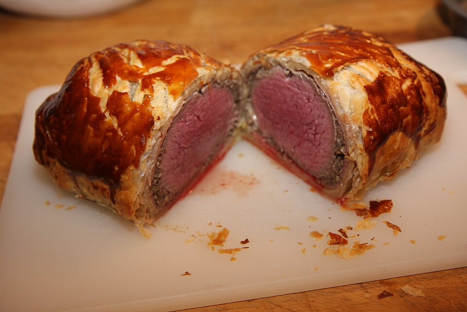

Carnes · Bovinos
Filé à Wellington

Ingredientes
- 1 peça de filé mignon com cerca de 1,2 kg
- 200 g de champignons
- 2 colheres (sopa) de manteiga
- 1 cebola picada
- 1 1/2 xícara de farinha de rosca
- 1/2 colher (chá) de sal
- 1/4 colher (chá) de pimenta-do-reino
- 1 colher (chá) de tomilho
- 4 colheres (sopa) de salsa e cebolinha verde
- 2 latas de pasta de fígado
- 3 colheres (sopa) de conhaque
- 800 g de massa folhada semipronta
- 2 claras
- 2 gemas
Modo de preparo
- Limpe o filé e retire a gordura. Asse em forno preaquecido a 220°C por cerca de 40 minutos.
- Pique os champignons (reserve cerca de 6 inteiros). Quando a carne estiver assada, deixe esfriar e leve à geladeira.
- Derreta a manteiga; junte cebola e champignons e cozinhe cerca de 10 minutos, até o líquido evaporar.
- Junte farinha de rosca, sal, pimenta, tomilho, salsa e cebolinha, pasta de fígado e conhaque. Mexa e deixe esfriar.
- Abra a massa folhada em retângulo de cerca de 40 x 50 cm e 0,5 cm de espessura. Espalhe a mistura de cogumelos no centro.
- Coloque a carne sobre a mistura, polvilhe sal e distribua os cogumelos inteiros por cima.
- Bata as claras com 2 colheres (sopa) de água; pincele as bordas. Embrulhe a carne na massa, aperte as bordas e dobre as laterais por baixo. Coloque em assadeira.
- Com as sobras de massa, recorte flores e folhas; pincele com clara e decore. Congele.
Observação
Se preferir montar na hora de assar, congele carne, recheio e massa separados. Congelamento: endureça na assadeira, passe para saco plástico e congele. Descongelamento: 3 h na geladeira; pincele com gemas batidas com 2 colheres (chá) de água e asse a temperatura alta por 30 minutos.